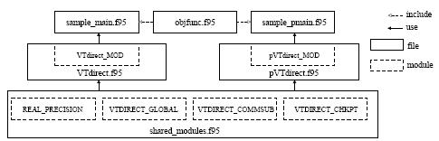

User Guide
VTDIRECT95 has two driver subroutines---VTdirect and pVTdirect. The subroutine VTdirect is a sequential Fortran 95 implementation of the DIRECT global unconstrained optimization algorithm for finding the global minimum of a multivariate function. The subroutine pVTdirect is a massively parallel version of VTdirect. These two subroutines share the modules REAL_PRECISION from HOMPACK90 for specifying the real data type; VTDIRECT_GLOBAL containing definitions of derived data types, parameters, and module procedures; VTDIRECT_COMMSUB containing the common subroutines and functions; and VTDIRECT_CHKPT defining data types and module procedures for the checkpointing feature. The specific data types, auxiliary subroutines, and functions for each subroutine are given in the module VTdirect_MOD (file VTdirect.f95) for VTdirect, or in the module pVTdirect_MOD (file pVTdirect.f95) for pVTdirect. In addition, error flags are described in the comments at the beginning of the driver subroutines VTdirect and pVTdirect. These comments serve as the user manual for the package.
The physical organization into files is as follows. Files are distributed in a two-level directory structure. All the source files are at the top level. Input data files and sample output files for VTdirect and pVTdirect are in the directories 'serial' and 'parallel', respectively. The file objfunc.f95 defines example objective functions used for testing. The file shared_modules.f95 contains the modules REAL_PRECISION, VTDIRECT_GLOBAL, VTDIRECT_COMMSUB, and VTDIRECT_CHKPT. The file simple_main.f95 contains a simple example of a main program that calls VTdirect with hardwired inputs to optimize the Griewank test function defined in the file objfunc.f95. The file sample_main.f95 contains a test program that calls VTdirect to optimize five test objective functions defined in the file objfunc.f95 and verifies the installation; the file VTdirect.f95 contains the module VTdirect_MOD, which includes the driver subroutine VTdirect. The directory 'serial' contains five namelist files (direct*.nml) to be used for testing, and a sample output file results.txt generated by the test program SAMPLE_MAIN.
The file sample_pmain.f95 contains the test and verification program for pVTdirect; the file pVTdirect.f95 contains the module pVTdirect_MOD, which includes the driver subroutine pVTdirect. The directory 'parallel' contains namelist files (pdirect*.nml) with additional parallel scheme parameters, and an example output file (result*.txt) for each objective function.
In the test program, each objective function illustrates a different way of calling the principal subroutine VTdirect or pVTdirect. The calls illustrate four different stopping rules--- maximum number of iterations, maximum number of function evaluations, minimum box diameter, and minimum relative decrease in objective function value. For the last objective function, a multiple best box output is illustrated. Details of the arguments are in comments at the beginning of the subroutine VTdirect. Different parallel schemes are used in the test cases for pVTdirect. The main test program prints to standard out the stopping rule satisfied, the minimum objective function value, the minimum box diameter, and the number of iterations, function evaluations, and the minimum vector(s). In addition, the test output for pVTdirect lists the number of masters per subdomain and the number of subdomains.
To test the serial code, compile the files in the following order as in:
$f95 -o main $OPTS shared_modules.f95 VTdirect.f95 sample_main.f95
where $f95 is the name of the Fortran 95 compiler and $OPTS are compiler options. Then execute
cd serial; ../main
to test the installation.
The simple main program example in simple_main.f95 is compiled and tested similarly.
To test the parallel code, compile the files in the following order as in:
$f95 -o pmain $OPTS shared_modules.f95 pVTdirect.f95 sample_pmain.f95
where $f95 is the name of the Fortran 95 compiler and $OPTS are compiler options. (Note: as of August, 2007, the Intel ifort compiler requires the option "-assume byterecl" for pVTdirect and MPI to work together correctly.) Then, to test the installation, execute the parallel code 'pmain' from the current directory 'parallel' using your local parallel job execution script. You may need to specify suffix options for MPI to pass the compilation.
Since the main program SAMPLE_PMAIN tests different parallel configurations, it is necessary to change the variable 'test_opt' in sample_pmain.f95 and recompile for each of the five parallel tests.
To call VTdirect or pVTdirect from your application, you must provide an interface block to your objective function similar to those for the five sample objective functions in sample_main.f95 and sample_pmain.f95.
NOTE: The file pVTdirect.MPI-1.f95 contains an MPI-1 version of the (updated, MPI-2 based) subroutine pVTdirect contained in the file pVTdirect.f95.